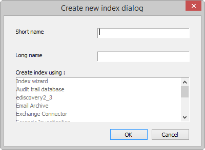
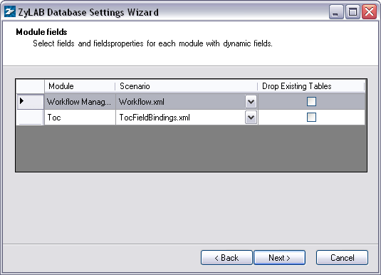
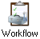
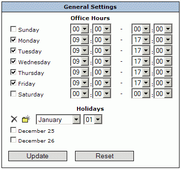
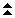
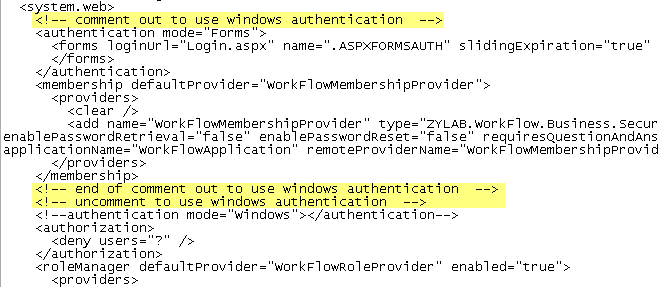
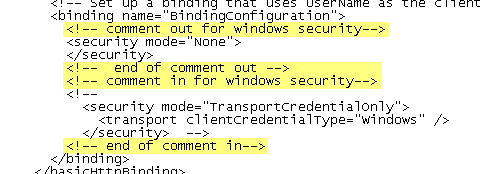
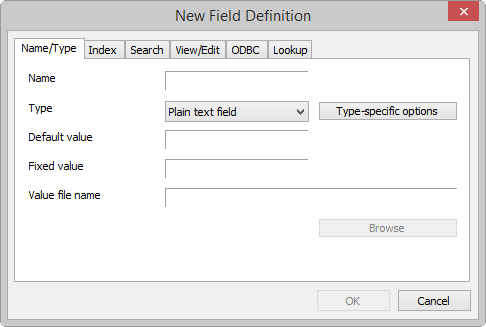
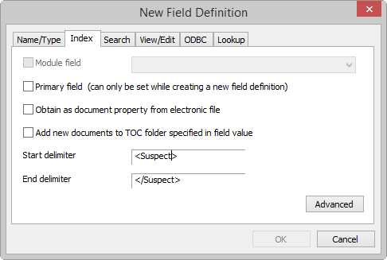

Configuration ZyLAB Workflow
Conditions
Once you have installed ZyLAB Workflow, some additional settings need to be configured. First, the ZyINDEX Workflow needs to be defined. You can choose to work with Custom Workflow Fields. Finally, if you want to import or scan documents, you need to create a template in ZySCAN.
Instructions
- Define the ZyINDEX Workflow
- Create a Workflow Index
- Adjust the web.config file
- Create a Data Index
- Create a New Web Client
- Adjust ZyINDEX Workflow Settings
- Workflow and Custom Workflow Fields.
- Set up a Workflow via ZySCAN.
Result
You have configured ZyLAB Workflow. Now, workflows can be started. For more information, see Using ZyLAB Workflow (page 282).
ZyINDEX Workflow
Create a Workflow index
Conditions
ZyINDEX is open.
Instructions
- Click the BUILD icon:
 .
.
- Go to File > New.

- Enter a Short name (max. 8 characters).
- Enter a descriptive Long name (max. 80 characters). Use the name to describe the contents of the index.
- Select Index Wizard.
- Click OK.
- Select the checkbox 'Use Windows code page'.
- Click Next.
- Double click on the Workflow Management module to select it.
A standard set of workflow templates is included with ZyLAB Workflow. See \\Program Files\ZyLAB\Information Management Platform\AddOn\Workflow Library.
- Click Next.
- If shown, read the message and click OK.
- Click Next twice.
- At Step 5: Define Fields, click the Wizard button.
The ZyLAB Database Settings Wizard appears.
- Click Next.
- Select the Database provider MS SQL Server.
- Click Next.
The Module fields dialog appears, with Module Workflow Management added to the list.

- Click Next.
The Generate database dialog appears.

- Click the Construct button.
- Select from the dropdown list the Provider SQLOLEDB.
- Select the SQL Server that you want to use. Alternately, you can click Retrieve Servers and select the desired server from the returned list.
- Click OK.
- Define a Username and Password. These credentials are already known on the database server. This user is allowed to change the database and the tables within the database.
- Click Create new.
- Click the Generate button.
The database is generated.
- Click Next.
The Connection String you defined is copied. You only have to define a separate Username and Password. This user is allowed to view and change data in the tables.
- Click Test Connection.
If the connection is not correct, try using other settings.
- Click Next until Finish.
You will return to the index wizard.
- Click Next until Finish.
- Build the index.
Result
You have created a Workflow index. This index is used for creating a Workflow. Create a data index (page 249), for storing documents related to the Workflow (index).
Adjust the web.config file
Conditions
You have installed ZyLAB Workflow.
You have created a Workflow index and defined the database settings. Now define the database settings need to be defined in the web.config file.
Instructions
- Go to \\Program Files\ZyLAB\Workflow\webroot.
- Open the web.config file.
- Search for the connection string parameters:
<!-- fill in the connection string parameters before using workflow -->
<add name="WorkFlowConnectionString" connectionString="Data Source=;Initial Catalog=;Persist Security Info=True;User ID=;Password=" providerName="System.Data.SqlClient" />
- Fill out the Data Source (the name of the database server you are using), the Initial Catalog (the database created during the creation of the Workflow index or the short index name of the Workflow index if you have left everything as default), the User ID and the Password (that you used in the Database Wizard).
- Save and Close.
Result
You have defined the database settings in the web.config file.
Create a Data Index
Conditions
ZyINDEX is open.
Instructions
- Click the BUILD icon: .
- Go to File > New.
- Enter a Short name (max. 8 characters).
- Enter a descriptive Long name (max. 80 characters). Use the name to describe the contents of the index.
- Select Index Wizard.
- Click OK.
- Click Next.
- Double click the XML Wrapper if you would like to create an XML Wrapper index, otherwise, click Next.
- Click Next.
- If shown, read the message and click OK.
- Click Next until the wizard is finished.
- Click Finish to complet the wizard.
Result
You have created a Workflow data index. This index will be used to archive all the (uploaded or scanned) documents needed for working with the workflow.
Note
It is advised to use a data index with XML Wrapper when adding fields.
If you want to add documents to your workflow, make sure to define the data index in the workflow template. For more information, see Create Workpool Templates (page 255).
Create a New Web Client
Conditions
ZyINDEX is open.
Instructions
- Click the Web Client icon:
 .
.
- Go to File > New.
- Define a Long Client Name.
- Define the HTTP alias (URL).
- Browse to the directory where you want to store the Web Client.
- If required, define a Client email address.
- Select a language for the Template language.
- Click OK twice.
- Select the Indexes part.
- Click Select.
- Select the data index and the workflow index.
Make sure the workflow index is the last index in the indexlist of the web client.
- Click OK.
Result
You have created a new web client.
Adjust ZyINDEX Workflow Settings
Settings (Office Hours/Holidays)
Conditions
You want to define the office hours which can be used for task transfer duration. Also, holidays can be indicated.
Instructions
- ZyINDEX is open.
- Click the Workflow icon: .
- Click Settings.

- Select the correct days.
- Select the correct office hours for each day.
- Define holidays:
- To add holidays, select the correct month and day from the dropdown listboxes, and click .
- To delete holidays, select the appropriate boxes and click .
Result
You have defined the office hours which can be used for task transfer duration. During holidays, no task transfer actions will occur.
Create Workpools
Conditions
You have created a Workflow database (index). ZyINDEX is still open. Now you want to define the members of each workpool. If a user is not a member of a workpool, he has no access to the tasks available for that workpool.
Instructions
- Select the Workflow icon: .
- Select the Workflow folder, and the database you just created.
If you do not see the database, click your right mouse button and select Refresh. The database will appear in the list.
- Select Workpools.
- Click Create.
- Define a Name for the new workpool.
- Describe the goal and/or tasks of the members of the workpool.
- To add a user to the workpool, click the yellow folder icon: .
- Define whether the workflow database must be updated after completion of this dialog.
- Select the users you want to add.
Users can be assigned to multiple workpools.
- Click OK.
- Click Update.
- Repeat steps 3 - 7 to create all the workpools you need.
Result
You have created one or more workpools, and added users.
Note
To delete a workpool, select it and click Delete. Click OK.
To copy a workpool, select it and click Copy. Select it to make some changes.
To remove a user from a workpool, select it in the Edit screen, and click Update.
Users can (temporarily) be excluded from the workpool, for example when a user is on holiday. Click Disable in the Edit screen, and click Update. The member will be displayed in red.
Use the arrows to navigate to the overview screen with all workpools.
Use the  and arrows to hide or show the poolmembers.
Create Workpool Templates
Conditions
Once you have created a new workflow index and workpools with members, it is possible to create workflow templates. A workflow template consists of a collection of tasks and actions. A task is assembled from a number of actions. First tasks, then actions for those tasks and finally the sequence of tasks is defined in a workflow template. Multiple workpool templates may be created for the same workpool database. By default, the Invoice Authorization template is added. Other standard templates that can be used are: Review, QuickReview, Helpdesk authorization, and ExpensesAuthorization. They can be imported via Export/Import (page 263).
Instructions
- If you are not already in ZyINDEX > Workflow, click the Workflow icon: .
- Select the Workflow folder, and the correct database folder.
- Select Templates.
- Click Create.
- Define the Template Name.
- Set the priority.
- You can select Required, Optional or No for the option "When a workflow based on this template is created a user has to be assigned to the initial task".
- If you selected Required or Optional, define whether or not the user must be notified (through email). This email will include the Workflow name, - task, - sender, and a link to the Web Client. If the user must be notified, make sure that the SMTP Server is defined correctly (see ZyINDEX Security > General > Settings (page 165)). Also, make sure the Webserver and Web Client are indicated (see Preferences (page 262)).
Only the first user will be notified through this option, the following user can be notified by selecting the option 'Notify transfer user' via the Transfer Matrix (step 12d) for each following step in the Workflow.
- To define the Management Pool, select one of the Workpools.
Use the Table icon  to switch between selected item and overview of items.
to switch between selected item and overview of items.
Use the and icons to show/hide item descriptions.
- To create a task, click the New folder icon in the lower part of the screen. See Create New Task (page 257).
- To create a new action type, click the second New folder icon . See Create New Action Type (page 258). Actions are predefined key fields that can be added to a Workflow task.
- To define the sequence of tasks (the workflow task transfer), select the Table icon (Transfer Matrix).
Use the Table icon to switch between selected initial task and transfer matrix overview.
Use the and icons to show/hide item properties.
- Find the first task in one of the rows and the second in one of the columns (the numbers refer to the corresponding tasks).
- Click on the matching cell.
- Define the prompt (message) an end-user receives when this task is due. You can also use HTML code to include, for example, an image.
- Select the actions that must be executed for this task, and define if the action is required (mandatory) or not.
If you select the option to 'Add documents', make sure you select a data index to store the documents in. This should not be a Workflow index!
- Define the number of days when the workflow database must be updated
- from end of the task
- from start of the workflow
- before due date of the workflow
- It is possible to trigger a custom VB script whenever a transfer is successfully executed. VB scripts can be used, for example, to send an email notification or to trigger a process in another system.
- If you want to assign the next task to a specific user (group), select the checkbox and select a task from the dropdown listbox.
- If you want to display the transfer options as radiobuttons, select that checkbox.
- Click OK.
- To create a new Document Category, select the third New folder icon . See Create New Document Category (page 260).
With Document Categories you can search your document Index by putting queries in the document fields in ZyINDEX. When you start a new workflow, all the documents are shown that are linked to the query.
- Click Update.
- Repeat steps 4 - 12 to create another workpool template.
Result
You have created one or more workpool templates. The first task will be highlighted green.
Create New Task
Instructions
- Define a name for the Task.
- Associate one or more workpools with the task.
Click the table icon to view/hide all workpools. The blue workpool is selected.
Click the and icons to view/hide additional information on all workpools.
- Define the Type of the task. Choose from
- Regular (single user, multiple target states)
One user must complete a task, another user must complete the next task, etc.
- Review (multiple users, single target state)
If you select Review, define the default number of reviewers.
For example, 2 users must review a task. When both reviewers are done, the workflow will continue with the user of the next task.
- Define the Duration of the task.
This duration time is used to calculate a due date for the workflow when this task is active.
- Click OK.
Result
You have created a new task.
Create New Action Type
Instructions
- Define a Name for the action type.
- Select whether or not the action should be disabled for now.
- Define the Data Type. Choose from Date, DateTime, Float, Logical, Number, Text, Memo.
- Define the Action Type. Choose from Custom Action, Auto Increment, or Workflow Counter (see Note below).
- Optionally, define the Control Type. If you do not select a Control Type, it will be automatically selected in the workflow.
- If you selected Date, select StandardDate.
- If you selected DateTime, select DateTimeControl.
- If you selected Float or Text, choose from CurrencyControl, FileControl, PincodeControl, TextControl, TextAreaControl, MultiSelect, SingleSelect.
- If you selected Logical, choose from LogicalCombo, MultiSelect, SingleSelect.
- If you selected Number or Memo, choose from CurrencyControl, FileControl, PincodeControl, TextControl, TextAreaControl, MultiSelect, SingleSelect.
If you select CurrencyControl, and want to change the currency (by default EUR €), go to C:\Program Files\ZyLAB\Workflow\webroot\App_Data\Settings.xml. Open the Settings file, and change the currency in the localization/CurrencyCulture node using, for example, en-US, en-GB, es-MX, de-DE, or ja-JP. The Culture node defines numerical and date settings.
If you select MultiSelect or SingleSelect, click Edit to define the values users are allowed to choose from. Define a value, click enter, define the next value, etc. With MultiSelect, users can select one or more values from a dropdown listbox. With SingleSelect, users can only select one value from a dropdown listbox.
- Optionally, define a default value and/or format mask. If you open a Workflow template, you will see the default value for this action type. For example, always a 100 euro fine.
- If you selected Date/Time, you can use the following formats:
YYYY year, eg 2006
YY year, eg 06 (2006)
MM month, eg 09 (September)
DD day of the month, eg 31
hh hour of the day, eg 23
mm minute of the hour, eg 08
ss second of the minute, eg 56
(for an overview of all other (more technical) formats, see the ZyLAB Information Platform Manual > Glossary > Strftime specifiers)
- If you did not select Date/Time, you can still use the date formatting. However, in that case the current Date/Time will be used. There are a few possibilities for the used Data Type:
- String (or Memo): replace %s with the default text.
- Whole number (Integer): replace c with the default number.
If the default number is 3, and the format is ccc, it will result in 003 (leading zeros).
Other examples: Value is 76, format is YYYY-MM-ccc which results in 2006-01-076. Value is 20060103231156 (a date), format is %Y %b %d %I:%M:%S %p which results in 2006 Jan 03 11:11:56 PM.
- Click OK.
Result
You have created a new action type.
Note
If you want to be able to count each occasion a Workflow item is created, you can create a Workflow counter.
As the Data Type, choose Number.
As the Action Type, choose Workflow Counter.
Users will find the Workflow counter in the Workflow Editor in ZyFIND.
Create New Document Category
With Document Categories you can search your document index, by putting queries in the document fields in ZyINDEX. When you start a new workflow, all documents that are linked to the query are shown.
Instructions
- Define a name for the Document Category. For example, Education.
- Enter a description. For example, Type of education required.
- Select an index from the dropdown listbox. This document index will be searched. The index may, for example, consist of CVs.
- Click Edit to define the query.
- Select the fields, and define the field values. For example, Technical.
- Click OK twice.
Result
You have created a new document category. Each time a workflow item is created, documents that correspond with this query, will be linked dynamically to the workflow. The Workflow editor in ZyFIND/Webclient will show the documents which correspond with the fieldvalue/query defined as the Document Category.
Note
To link the Document Category to an Action, use the # sign. For example, if you have a workflow action called "PropertyRegistrationNumber" and an index with a field called "PropertyId", then the document category for the workflow could be defined as "PropertyId = #PropertyRegistrationNumber".
VB Scripts
VB scripts can be used, for example, to send an email notification or to trigger a process in another system.
Workflow XML and VB Scripting
OnTaskBeforeTransfer
Sub OnTaskBeforeTransfer(WorkflowXmlDocument, PropertyXmlDocument)
WorkflowXmlDocument.save "C:\Temp\WorkflowXmlDocument.xml"
PropertyXmlDocument.save "C:\Temp\PropertyXmlDocument.xml"
End Sub
OnTaskAfterTransfer
Sub OnTaskAfterTransfer(WorkflowXmlDocument)
WorkflowXmlDocument.save "C:\Temp\WorkflowXmlDocumentAfter.xml"
End Sub
Archiving workflow actions as document data
Triggering events in other systems
Preferences
Conditions
You want to define the Preferences.
You want to send an email to a user who has been assigned with a task. This email contains a link to the Web Client, where the user can continue the workflow. In order to enable this link, the Preferences need to be filled out.
Instructions
- Define IncludeCounts. Obsolete.
- Define IncludeCounts (Management). Obsolete.
- Define MaxResults. These are the maximum number of rows shown per page in the Workflow tabs.
- Define MaxResults (Management). These are the maximum number of rows shown per page in the Workflow Management tab.
- Define the TocRefreshTime. Obsolete.
- Define the TocRefreshTime (Management). Obsolete.
- Insert the Long index name of the (ZyNET) Web Client with the correct indexes for the workflow.
- Insert the (DNS) name of the Webserver (which can be accessed from an extern location).
- The ZyNetUrl defines the location where mails are sent to (only used if a workflow is created by ZyNET (Web Client)) or ZySCAN(Service)).
Result
You have defined the Preferences.
The link to the Web Client will be enabled in the email to the user who has been assigned with a task.
Export/Import
Conditions
You want to export or import information regarding Workflow, for example templates, users, data. Standard templates include Invoice Authorization, Review, QuickReview, Helpdesk authorization, and ExpensesAuthorization.
Instructions
- Define which types of information you want to export or import. Choose from:
- Include related objects
Select this option if you do not want to forget to export all related objects. For example, Templates are related to Workpools (but Workpools do not necessarily need Templates); A task in a template cannot be completed without a member of a Workpool executing that task. If you do not select Include related objects, you can choose to export/import only Templates. Data is related to Indexes (but Indexes do not necessarily need Data). If you do not select Include related objects, you can choose to export/import only Data.
- Templates
Workflow templates, including all Tasks and Action Types.
- Workpools
WorkPools and PoolMembers.
- Indexes
DocumentIndexes (a list of all indexes which include documents related to a Workflow)
- Data
Workflows, ActionValues, WorkflowDocuments and TransitionUsers (per executed task a record is created in the TransitionUser table of the database)
- If you want to export to an XML file, define the file you want to export to, and click Export.
- Overwrite existing file
During Export an existing XML file will be replaced.
- Keep original object id's
Each object in the Workflow database had its own unique ID number, a GUID (for example, {A85924EA-A572-4F92-B454-A1F76F118C44}). By default, this number will not be imported/exported to prevent occurrences of the same number in the database (possible if a file with saved GUIDs is imported twice). Under certain circumstances the GUIDs should remain the same. For example, when migrating from an Ms-Access database to an Sql Server.
- Export as friendly XML
Recommended. If you do not export as friendly XML, the XML is difficult to read and understand. There is no clear structure; all database records are placed one after the other.
- Remove template locking
Recommended. Templates are locked when working on them in ZyINDEX. This lock information could cause problems.
- If you want to import an XML file (for example, a template), select the file you want to import from the dropdown listbox, and click Import.
- Assign original object id's (if possible)
Only possible, if you exported with the original object id's (see step two, point two).
- Import all objects present in the file (selected object types will be ignored)
If this option is selected, you do not have to choose the objects to import.
- Replace existing objects (warning: existing data will be permanently deleted!)
Every table in which objects are imported, are cleaned first.
Result
You have exported or imported information.
Archiving
Conditions
You want to archive completed workflows to improve performance.
Instructions
- Select the Workflow icon: .
- Select the Workflow folder, and the correct database folder.
- Select Archiving.
- Select a date. Workflows that are completed before that date will be archived.
- Define the number of completed items.
- Select a target index. This target or archive index is created with the Workflow Archive template in ZyINDEX Build.
- Click Archive.
Result
You have archived completed workflows. The completed workflows are stored as XML files in the XML folder of a Workflow Archive index. All archived workflows are searchable. The Workflow Archive index can be connected to a web client.
Action Codes
In the task transfer schedule overview of the Workpool templates, cells contain an encoding of the programmed actions. View the table below for an explanation:
|
Code
|
Action |
| S |
Sign |
| C |
Comment |
| D |
Add Comment |
| P |
Specify Priority |
| T |
Specify Due Date |
| Red |
Required |
| ! |
Run Script |
| [0-9] |
Custom Action |
Set up a Workflow via ZySCAN
Conditions
You want to start a workflow whenever a document is exported to an index/database. Either the workflow template and user can be specified (for run unattended processing) or the user can set this interactively (in attended processing).
Instructions
- Open ZySCAN.
- Go to Options > Global Options.
- Select a Workflow index from the dropdown listbox.
- Click OK.
- Go to Template > New template.
- Define a new template, or choose an existing template to base the new one on.
- Click Next.
- Select Use XML internally.
- Select External Link.
- Select another index, in which you want to store your data (documents related to the Workflow index selected in step 3). This should not be a Workflow index, but a standard index.
- Select the checkbox Create ZyLAB Workflow.
- Click Next.
- Select ZySCAN or ZyIMPORT. Select ZyFIELD, ZyOCR, and ZyEXPORT.
- Click Next.
- Define your settings for ZySCAN or ZyIMPORT.
- Click Next.
- Click ZyLAB Workflow.
- Select a template, and select a user.
If the Workflow template allows it, more users can be selected (see Create New Task (page 257) > Type)
- Click OK.
- Click Next twice.
- Notice that no export directories can be chosen.
- Click Next.
- Click Finish.
Result
You have created a job template which can be run to start a Workflow. For unattended processing, see the ZySCAN manual > (Semi-)automatic job processing.
Note
For more information on creating a template, see the Standard User Manual > Preparing documents for full-text retrieval > Creating job templates.
Security
Automatically Log in to Workflow: Enable Windows Authentication
Conditions
You want to enable Windows Authentication, which makes it possible for users to automatically login to ZyLAB Workflow. Windows Authentication does not prompt users for a user name and password. If the authentication exchange initially fails to identify the user, the browser will prompt the user for a Windows user account user name and password.
Instructions
- Go to \\Program Files\ZyLAB\Workflow\webroot
- Open the web.config file.
- Scroll down to the authentication mode:

- Add comment code around the authentication mode Forms.
- Delete the comment code around authentication mode Windows.

- Save and close the web.config file.
Result
You have enabled Windows Authentication and will be able to automatically login to ZyLAB Workflow.
Digital Signature
Conditions
Workflow is secured with a built-in digital signing action, for which users need to have a pincode. With this pincode workflows can be authenticated. A pincode is not the same as a user password. Pincodes are generated in ZyINDEX.
Instructions
- Go to ZyINDEX > Security.
- Select General > Users > Available Users.
- Select a user.
- Click the "Generate a new PIN code for the user" button .
- Determine if the user should have a 4 or 6 digit PIN code.
A 6 digit PIN code is safer, but a 4 digit PIN code is easier to remember.
- Determine the expiration time (number of days valid) of the pincode.
- Fill out the email address of the user.
An email will be sent to the user with the PIN code in the subject line.
- Fill out the email address of the sender.
This can be a random address.
- Click Generate.
Result
You have generated a PIN code for a specific user.
Note
Import users to the user list if they are not on it already. For more information, see the ZyLAB Information Management Platform Manual > ZyINDEX > Security > General > Users > Import Users (page 173).
Enable Quickbuild for ASP.NET User
To enable quickbuild for ASP.NET users, enable writing on
"..../ZyLAB Data/Index Data/[Data Index]" to store documents
"..../ZyLAB Data/Indexes/[Data Index]" to store quickbuild options
Quickbuild
Use Quick Build to quickly index documents that are marked new, changed or deleted. All other documents are skipped.
Marked documents are known to ZyINDEX, even before indexing starts, because they have an entry in the database. These references to the documents are created when they are exported to the index data directories with ZySCAN or when they are imported to the index data folder with the ZyINDEX import directory. Since only marked documents are indexed and all other documents are skipped, the indexing process is accelerated.
You can only use Quick Build if a link to the index is present. Also, check if 'Quick build enabled'' is selected (ZyINDEX > Index Settings > Settings).
Adjust Functionality via the Settings.xml file
Change the Currency
If you want to change the currency (by default EUR €), go to C:\Program Files\ZyLAB\Workflow\webroot\App_Data\Settings.xml. Open the Settings file, and change the currency in the localization/CurrencyCulture node using, for example, en-US, en-GB, es-MX, de-DE, or ja-JP.
Show or Hide the Search tab
The Search tab can be hidden/shown via the settings.xml file. Go to \\Program Files\ZyLAB\Workflow\webroot\App_Data\ and open the settings.xml file. Set 'searchtab visible' to false or true and save the file.
<options>
<!-- set visible = false to hide search tab -->
<searchtab visible="true"/>
<!-- set enableInitialDocument to true to be able to show the initial document-->
<newWorkflow enableInitialDocument="false" initialDocumentMandatory="false"/>
</options>
Show or Hide Uploading a Document to a New Workflow
When creating a new workflow the ability to upload a document can be hidden/shown via the settings.xml file. Go to \\Program Files\ZyLAB\Workflow\webroot\App_Data\ and open the settings.xml file. Set 'newWorkflow enableInitialDocument' to false (users will not be able to upload a document) or true (users will be able to upload a document) and save the file.
Uploading a document to a new workflow can be made mandatory; Set 'initialDocumentMandatory' to true.
Add Custom Workflow Fields
See Workflow and Custom Workflow Fields (page 275).
Change the order of the mappings and/or define an alternative mapping]
If you want to change the order of the mappings and/or define an alternative mapping, the codes <mappings ordered="true|false">, <own ordered="true|false">, <management ordered="true|false"> and/or <completed ordered="true|false"> can be added to the settings.xml file, located at \\Program Files\ZyLAB\Workflow\webroot\App_Data. All nodes can contain fields:
<mappings ordered="true">
This node will replace the node <mappings>; The columns in the grid will have the same order as the columns in the settings file.
New (optional) childs of this node are:
- <own ordered="true">
<field ...
</own>
This node means a separate configuration for the own workflow grid. Order will not be obtained from the mappings node.
- <management ordered="true">
<field ...
</management >
This node means a separate configuration for the management grid. Order will not be obtained from the mappings node.
- <completed ordered="true">
<field ...
</completed>
This node means a separate configuration for the completed grid. Order will not be obtained from the mappings node.
- <field ...
</mappings>
This node means a separate configuration for all grids that are not configured.
Workflow and Custom Workflow Fields
Conditions
You want to add Custom Workflow Fields to your workflow to add functionality.
Instructions
- Go to ZyINDEX > Build.
- Open the workflow data index.
- Add fields (step 4 to 13). If fields are already added, continue with step 14.
- Click Define Fields
 .
.
- Click Add definition.
The New Field Definition window appears.

- Fill out the Name of the field definition.
A field name may not contain spaces!
- Select a Type from the dropdown list.
- Select the Index tab.

- If the data index was created with an XML Wrapper, select Module field > XML Wrapper.
It is advised to use a data index with XML Wrapper when adding fields.
- Click OK.
- To add more fields, repeat step 5 to 10.
- Click OK.
- Build the index.
- Go to \\Program Files\ZyLAB\Workflow\webroot\App_Data
- Open the settings.xml file.
- Scroll to line <field id="Documents" hide="true">Number of Documents</field>
- Below this line, add the following line for each custom workflow field:
<field id="Custom01" hide="false">Custom01</field>
- Scroll to section <customfields>
- Replace <!-- fill here your own document fields --> with <field id="Custom01" name="Custom01" property="Custom01" type="2"></field> for each custom workflow field.
- Scroll to section <mappings>
- Replace <!-- fill here your own document fields --> with <field id="Custom01" hide="false" width="200">Custom01</field> for each custom workflow field.
- Save the settings.xml file.
Result
You have added Custom Workflow Fields to your workflow.
Note
If you want to change the order of the mappings and/or define an alternative mapping, the codes <mappings ordered="true|false">, <own ordered="true|false">, <management ordered="true|false"> and/or <completed ordered="true|false"> can be added to the settings.xml file, located at \\Program Files\ZyLAB\Workflow\webroot\App_Data. All nodes can contain fields:
<mappings ordered="true">
The columns in the grid will have the same order as the columns in the settings file.
New (optional) childs of this node are:
<own ordered="true">
<field ...
</own>
This node means a separate configuration for the own workflow grid. Order will not be obtained from the mappings node.
<management ordered="true">
<field ...
</management >
This node means a separate configuration for the management grid. Order will not be obtained from the mappings node.
<completed ordered="true">
<field ...
</completed>
This node means a separate configuration for the completed grid. Order will not be obtained from the mappings node.
<field ...
</mappings>
This node means a separate configuration for all grids that are not configured.
Update Document Fields
Conditions
You want to regularly update document fields.
Instructions
- Create a scheduled task. Creating a scheduled task is different for each Operating System.
- For Windows XP, for example, go to Start > Control Panel > Scheduled Tasks.
- Double click on Add Scheduled Task.
The Scheduled Task Wizard will appear.
- Click Browse.
- Go to \\Program Files\ZyLAB\Workflow\webroot\bin and select ZyLAB.Workflow.TaskConsole.exe
- Define the name for this task: ZyLAB.Workflow.TaskConsole UpdateFields
- Define how often this task should be performed.
- Click Next.
- Define the time schedule more precise.
- Click Next.
- Define the Windows user name and password.
If Windows authentication is used in the configuration (see Automatically Log in to Workflow: Enable Windows Authentication (page 269)), this should be a Windows user known by ZyLAB Workflow.
If a ZyLAB User will be used, a Windows user only has to be able to start an application.
For using ZyLAB user authentication, the user has to be defined in the ZyLAB.Workflow.Taskconsole.exe.config file, located at \\Program Files\ZyLAB\Workflow\webroot\bin. See Note below.
- Click Next.
- Click Finish.
Result
You have defined how often document fields should be updated.
Note
Define the ZyLAB Platform username and password in the ZyLAB.Workflow.Taskconsole.exe.config file, located at \\Program Files\ZyLAB\Workflow\webroot\bin and set the UseFormsAuthentication value to true.

Notify Users of Due Tasks
Conditions
You want to notify a user a few days in advance of due tasks.
Instructions
- Create a scheduled task. Creating a scheduled task is different for each Operating System.
- For Windows XP, for example, go to Start > Control Panel > Scheduled Tasks.
- Double click on Add Scheduled Task.
The Scheduled Task Wizard will appear.
- Click Browse.
- Go to \\Program Files\ZyLAB\Workflow\webroot\bin and select ZyLAB.Workflow.TaskConsole.exe
- Define the name for this task: ZyLAB.Workflow.TaskConsole notify [DueDays]
Where DueDays are the number of days before the scheduled date that the task should be performed by the user.
- Define when this task should be performed. In this case: One time only.
- Click Next.
- Define the start time and start date.
- Click Next.
- Define the Windows user name and password.
If Windows authentication is used in the configuration (see Automatically Log in to Workflow: Enable Windows Authentication (page 269)), this should be a Windows user known by ZyLAB Workflow.
If a ZyLAB User will be used, a Windows user only has to be able to start an application.
For using ZyLAB user authentication, the user has to be defined in the ZyLAB.Workflow.Taskconsole.exe.config file, located at \\Program Files\ZyLAB\Workflow\webroot\bin. See Note below.
- Click Next.
- Click Finish.
Result
You have defined when and how a user is notified of due tasks.
Note
Define the ZyLAB Platform username and password in the ZyLAB.Workflow.Taskconsole.exe.config file, located at \\Program Files\ZyLAB\Workflow\webroot\bin and set the UseFormsAuthentication value to true.